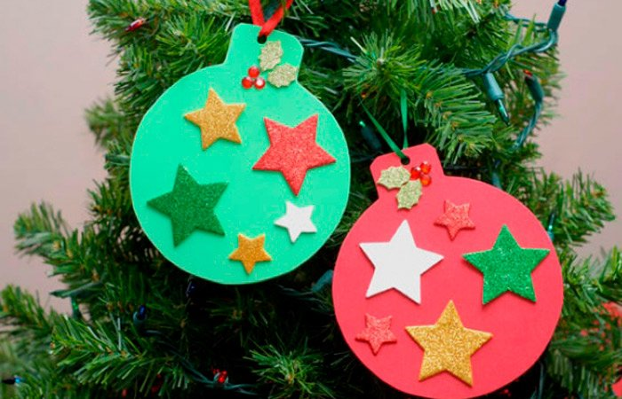
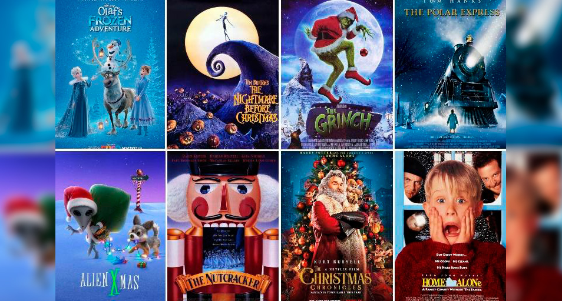
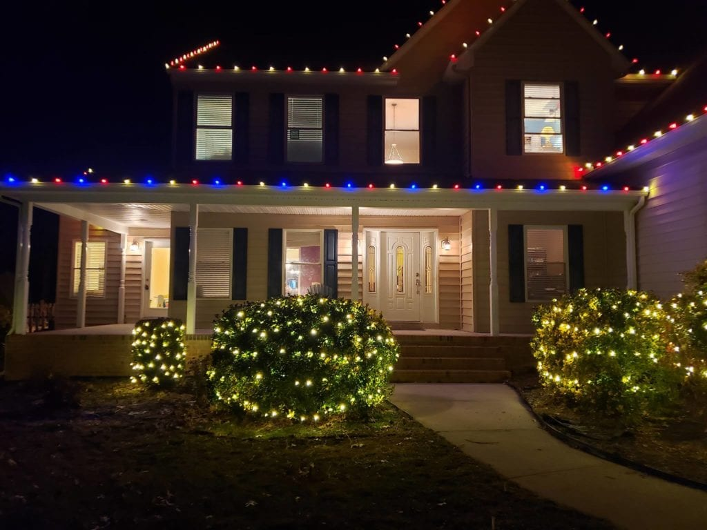
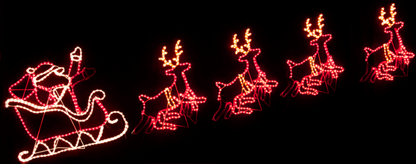
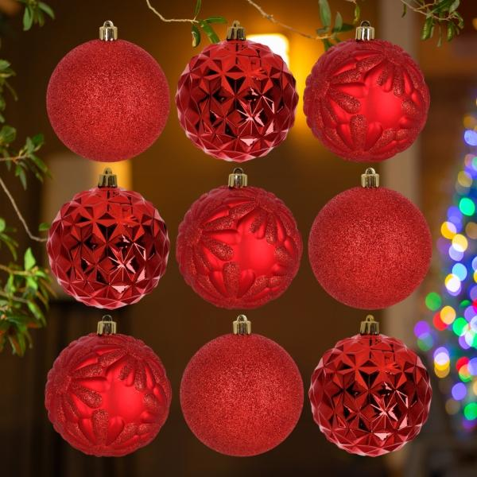
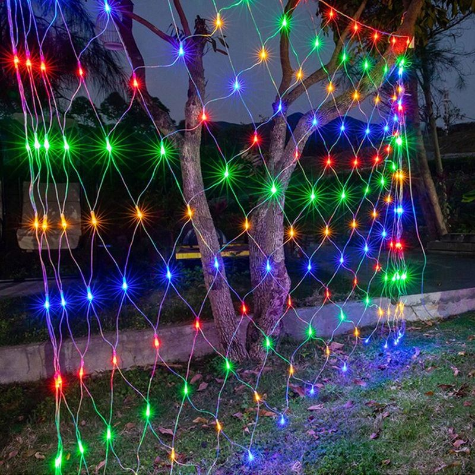
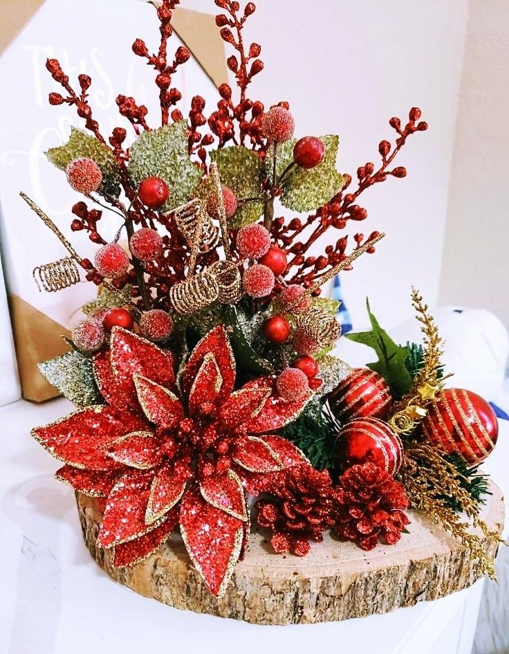

1. DECORACION DEL ARBOL EN FAMILIA .png)

-
- Decoren el arbol juntos, agregando luces, adornos personalizados y recuerdos de años anteriores.Es una actividad que une y llena el hogar de espiritu navideño.
|
|
2. Hacer manualidades navideñas
| Crear adornos con materiales reciclables, coronas, tarjetas de felicitacion. |
 |
3. Cocinar galletas o postres navideños 
| Preparar galletas con formas de estrellas, muñecos y campanas es divertido. Ademas, puedes decorar las galletas con glase de colores |
|
4. Ver peliculas navideñas
- Organizar una tarde de cine con clasicos como "Mi pobre angelito", "El Grinch" o "Klaus". No puede faltar la canchita.
|
 |
5. Armar un rincon navideño para fotos .png)
- Crear un espacio con luces, regalos falsos y adornos para tomarte fotos con tu familia y compartir ese espiritu en redes.
|
|
.png) 6. Colocar luces dentro y fuera de la casa
6. Colocar luces dentro y fuera de la casa
- Usa luces LED en ventanas, puertas, escaleras o el jardin para darle un ambiente calido y festivo a tu hogar.
|
 |
.png) 7. Intercambio de regalos o "Amigos secretos"
7. Intercambio de regalos o "Amigos secretos"
- Organizar un intercambio de regalos entre familiares. Es una actividad divertida y llena de emocion.
|
.jpg) |
8. Leer cuentos o historias navideñas
- Comparte cuentos como "El cascanueces", o historias cortas para niños antes de dormir.
|
|
9. Escuchar musica navideña
- Crear una playlist con villancicos y canciones modernas de Navidad para animar el ambiente mientras cocinan o decoran.
|
|
10. Hacer una cena familiar especial
- Prepara una cena con platos tradicionales navideños y aprovecha el momento para agradecer por el año vivido.
|
.jpg) |
Todos estos productos los puedes encontrar con nosotros
"Navidad Encantada"
1. PRIMER PRODUCTO 
|  |
- Esferas, estrellas, campanas y figuras temáticas. Material: plástico resistente o vidrio liviano.
- S/ 2 – S/ 10 por unidad
- S/ 15 – S/ 30 por set de 6.
|
2. SEGUNDO PRODUCTO
|  |
- Luces de colores o blancas, de 3 a 10 metros, bajo consumo y varias funciones (parpadeo, secuencia, fijo
- S/ 15 – S/ 40 según tamaño y calidad.
|
3. TERCER PRODUCTO
.jpg) |
- Coronas hechas con pino artificial, escarcha, lazos y campanas. Ideales para decorar entradas y paredes.
- S/ 25 – S/ 60.
|
4. CUARTO PRODUCTO
|  |
- Arreglos decorativos con velas, piñas, lazos y flores artificiales.
- S/ 20 – S/ 50.
|
GALERIA DE IMAGENES
.jpg)
.jpg)
.jpg)


.jpeg)
.jpeg)
.jpeg)
.jpeg)

.jpeg)

.jpeg)